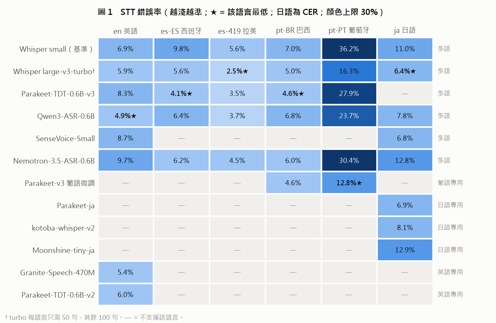
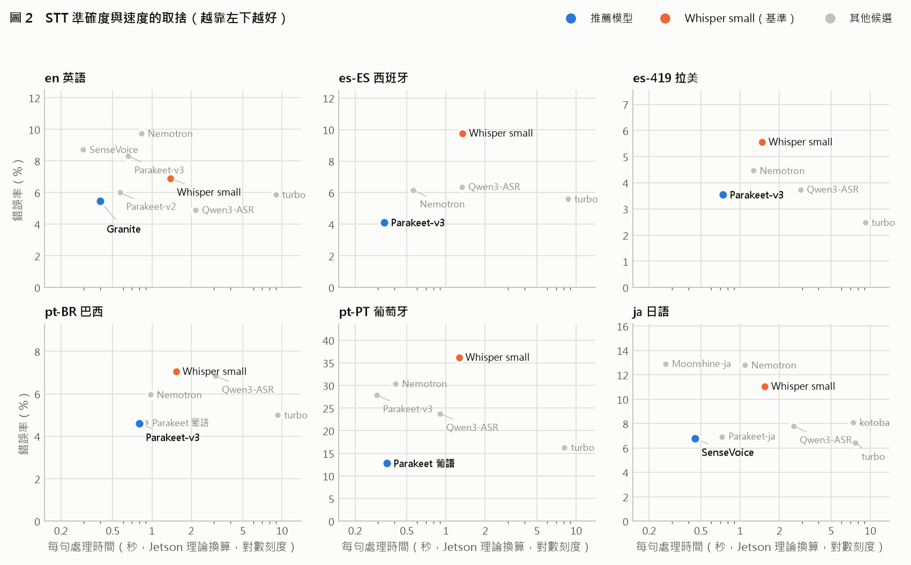
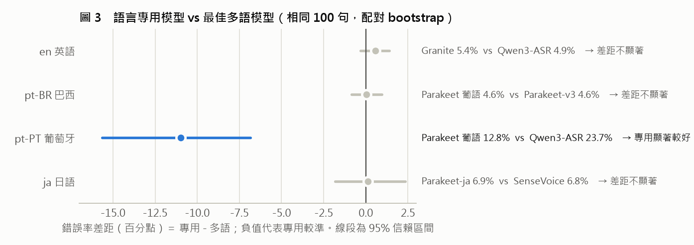
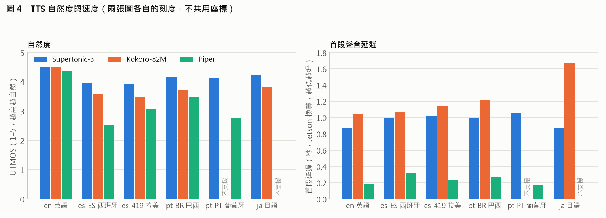
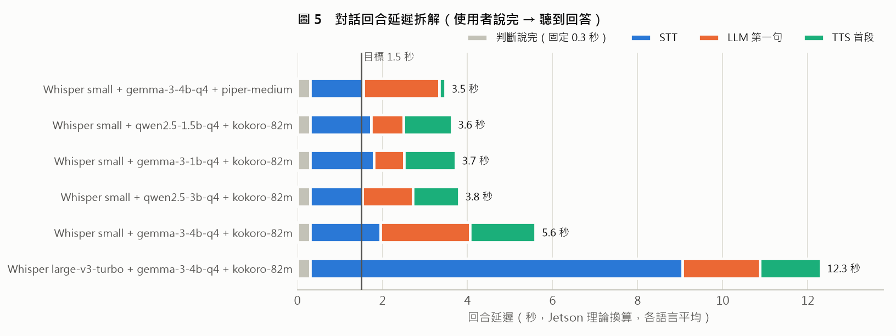

多語語音模型評測：結論報告
en 英語es-ES 西班牙西語es-419 拉美西語
pt-BR 巴西葡語pt-PT 葡萄牙葡語ja 日語
結論：6 種語言都已找到準確度達標的小型模型，但對話延遲仍未達標，需 Jetson 實測確認。
STT 達標語言
6 / 6
錯誤率 3.5%–12.8%
皆低於 30% 門檻
皆低於 30% 門檻
pt-PT 錯誤率
36.2% 12.8%
Whisper small → 葡語微調 Parakeet
TTS 模型數
1 個
Supertonic-3 涵蓋全部 6 種語言
對話回合延遲（Jetson 換算）
3.5 秒
目標 1.5 秒
新組合推估 1.9–2.7 秒
新組合推估 1.9–2.7 秒
- STT 以 NVIDIA Parakeet 系列為主力：西語、巴西葡語用 Parakeet-TDT-0.6B-v3（錯誤率 3.5–4.6%），比基準 Whisper small 顯著更準、快 2–4 倍。
- pt-PT 已解決：葡語微調版 Parakeet 錯誤率 12.8%（Whisper small 為 36.2%，不合格），且速度快。
- 日語用 SenseVoice-Small：錯誤率 6.8%（Whisper small 11.0%），記憶體僅約 0.3 GB。
- TTS 可用單一模型 Supertonic-3：唯一支援全部 6 種語言，自然度在 5 種語言排名第一，記憶體最小（約 0.5 GB）。
- 語言專用模型只在 pt-PT 有顯著優勢（−11.0 個百分點）；其他語言多語模型就足夠。
- 對話延遲是最大缺口：目前最佳組合約 3.5 秒，換上新的 STT / TTS 後推估約 1.9–2.7 秒，仍需 Jetson 實測與進一步優化。
需要的支援：Jetson Orin NX 實機（驗證速度），以及各語言母語者（聽測口音與自然度，特別是 pt-PT 與西語）。
1評測範圍與方法
| 項目 | 內容 |
|---|---|
| 測試量 | STT 16 個模型、TTS 3 個、LLM 4 個（6 個對話組合），共 3 晚、約 21 小時 |
| STT 資料 | 每語言 100 句：FLEURS（en、es-419、pt-BR、ja）、Common Voice 27.0（es-ES：伊比利半島口音；pt-PT：葡萄牙口音，已排除專業術語清單）。所有模型在相同句子上比較 |
| TTS / 對話資料 | 自寫導覽文本每語言 10 句；導覽問答每語言 6 題 |
| 準確度 | STT：WER（日語 CER）＋ 95% 信賴區間，差距以配對 bootstrap 檢定。TTS：UTMOS（預測自然度 1–5）、Whisper 回測錯誤率。已統一數字寫法（例：dezenove = 19） |
| 速度 | 開發機（Intel i3-10110U，無 GPU）實測，以理論係數換算 Jetson（未經實機校準，僅供排序） |
| 門檻 | 錯誤率 ≤ 30%、STT / TTS 記憶體各 ≤ 2 GB、Jetson RTF ≤ 0.5、對話回合延遲目標 1.5 秒 |
2STT（語音辨識）


- Whisper large-v3-turbo 最準但太慢：es-419、ja 錯誤率最低，但 Jetson 換算每句約 8–9 秒，不適合即時對話。
- Parakeet-v3 是西語、巴西葡語的最佳平衡點：準確度接近 turbo，每句約 0.3–0.8 秒（Whisper small 約 1.3–1.5 秒）。英語（8.3%）較弱，英語另用 Granite-Speech-470M（5.4%）。
- pt-PT 只有葡語微調的 Parakeet 兼顧準確度與速度：12.8%、每句約 0.35 秒。
- 日語 SenseVoice（6.8%）與 Parakeet-ja（6.9%）並列，SenseVoice 記憶體小得多（0.3 GB vs 1.1 GB）。
- 不建議：Whisper tiny / base（錯誤率過高）、medium（記憶體 2.4 GB 超出預算）、Nemotron-3.5（英語、日語、pt-PT 都比 Whisper small 差）。
3語言專用 vs 多語模型

| 語言 | 專用模型 | 最佳多語模型 | 差距（百分點） | 95% 信賴區間 | 結論 |
|---|---|---|---|---|---|
| en | Granite 5.4% | Qwen3-ASR 4.9% | +0.6 | −0.3 ～ +1.4 | 不顯著 |
| pt-BR | Parakeet 葡語 4.6% | Parakeet-v3 4.6% | 0.0 | −0.9 ～ +1.0 | 不顯著 |
| pt-PT | Parakeet 葡語 12.8% | Qwen3-ASR 23.7% | −11.0 | −15.7 ～ −6.8 | 專用顯著較好 |
| ja | Parakeet-ja 6.9% | SenseVoice 6.8% | +0.1 | −1.8 ～ +2.3 | 不顯著 |
結論：只有 pt-PT 值得採用專用（葡語）模型；其他語言用多語模型即可，部署較簡單。英語採用 Granite 的理由是速度（每句 0.4 秒 vs Qwen3-ASR 2.2 秒），而非準確度。
4TTS（語音合成）

| 模型 | 支援語言 | 自然度（UTMOS） | 回測錯誤率 | 首段延遲（Jetson 換算） | 記憶體 |
|---|---|---|---|---|---|
| Supertonic-3 | 全部 6 種 | 3.94–4.49，5 種語言第一 | 1.3–5.1% | 約 0.9–1.1 秒 | 約 0.5 GB |
| Kokoro-82M | 無 pt-PT | 3.48–4.50 | 0.0–2.1% | 約 1.0–1.7 秒 | 約 1.5 GB |
| Piper | 無 ja | 2.52–4.39 | 0.7–12.4% | 約 0.2–0.3 秒 | 約 0.8 GB |
- Supertonic-3 可作為單一通用 TTS：唯一支援全部語言、最自然、最省記憶體。尚待母語者確認 pt-PT 是否為葡萄牙口音、西語方言，以及西語回測錯誤率（約 4–5%）偏高的原因。
- Piper 是速度備案：首段延遲最短，但 es-ES、pt-PT 自然度低。
5語音對話（端到端延遲）

- 所有組合都未達 1.5 秒目標：最佳約 3.5 秒。主要延遲來自 STT（Whisper small 約 1.2–1.7 秒）與 TTS（Kokoro 約 1.1–1.5 秒）。
- 換上新的 STT / TTS 後的推估（元件相加，未實測）：判斷說完（0.3 秒）＋ Parakeet / SenseVoice（約 0.3–0.8 秒）＋ Qwen2.5-1.5B 第一句（約 0.8 秒）＋ Supertonic（約 1.0 秒）≈ 2.7 秒；若 TTS 改用 Piper ≈ 1.9 秒。
- LLM：Qwen2.5-1.5B 最快（第一句約 0.8 秒），Gemma-3-4B 回答最準但最慢；Gemma-3-1B 淘汰（事實正確率 50–67%，且會用錯語言回答）。每語言僅 6 題，回答品質結論仍屬初步。
- 要達到 1.5 秒，還需搭配：LLM 與 TTS 並行（邊生成邊合成）、串流 STT、常見問答預錄等做法。
6風險與限制
| 項目 | 影響 | 對策 |
|---|---|---|
| 速度為理論換算 | Jetson 實際速度可能差很多，推薦可能改變 | Jetson 實機校準（最優先） |
| 自然度靠 UTMOS | UTMOS 以英語資料訓練，非英語僅供相對比較 | 母語者聽測（已備有試聽頁與評分表） |
| 方言口音未確認 | Supertonic、Kokoro 不區分 pt-PT / pt-BR、es-ES / es-419 | 母語者聽測 |
| 葡語微調 Parakeet 只有 fp32 | 記憶體約 3.1 GB，超出 STT 預算 | 量化成 int8（預估約 1 GB）並驗證準確度 |
| 開發機記憶體偏高 | Qwen3-ASR、Nemotron、Granite 在 CPU 以 fp32 執行，Jetson 以 fp16 約減半 | Jetson 實測 |
| 未測噪音與幻覺 | 導覽現場有人聲干擾 | 短名單做噪音（SNR 10 dB）與靜音幻覺測試 |
| 對話題目少、問題為 TTS 合成 | 回答品質、STT 表現可能偏樂觀 | 擴充題目、改用真人錄音 |
| 授權 | 皆可用於 PoC；SenseVoice（FunASR 模型授權）、Supertonic（OpenRAIL-M，含使用限制）商用前需法務確認 | 商用前確認 |
7下一步
- Jetson 實機測試：Parakeet、SenseVoice、Granite、Supertonic、Piper 的實際速度；校準換算係數。
- 母語者聽測：Supertonic 的 pt-PT 口音與西語方言。
- 葡語微調 Parakeet 量化成 int8，確認準確度不變。
- 用新組合重跑對話測試（Parakeet / SenseVoice ＋ Qwen2.5-1.5B ＋ Supertonic / Piper），並實作 LLM 與 TTS 並行。
- 穩健性測試：噪音錯誤率、幻覺率；以及自錄導覽情境語音。
8總表：各語言推薦模型
| 語言 | STT 推薦 | 錯誤率 | 每句處理¹ | STT 備選 | TTS 推薦 | 自然度² | TTS 備選 |
|---|---|---|---|---|---|---|---|
| en | Granite-Speech-470M | 5.4% | 0.4 秒 | Parakeet-v2（6.0%）Whisper small（6.9%） | Supertonic-3 | 4.49 | Piper（4.39，最快） |
| es-ES | Parakeet-TDT-0.6B-v3 | 4.1% | 0.3 秒 | Nemotron-3.5（6.2%） | Supertonic-3 | 3.97 | Kokoro（3.58） |
| es-419 | Parakeet-TDT-0.6B-v3 | 3.5% | 0.7 秒 | Qwen3-ASR（3.7%） | Supertonic-3 | 3.94 | Piper（3.08，墨西哥口音） |
| pt-BR | Parakeet-TDT-0.6B-v3 | 4.6% | 0.8 秒 | Parakeet 葡語微調（4.6%） | Supertonic-3 | 4.18 | Kokoro（3.70） |
| pt-PT | Parakeet 葡語微調³ | 12.8% | 0.35 秒 | Whisper large-v3-turbo16.3%，慢 | Supertonic-3⁴ | 4.15 | Piper（2.76） |
| ja | SenseVoice-Small | 6.8% | 0.45 秒 | Parakeet-ja（6.9%） | Supertonic-3 | 4.23 | Kokoro（3.81） |
¹ Jetson 理論換算，未實測。 ² UTMOS（1–5），非英語僅供相對比較。 ³ 需量化成 int8 以符合記憶體預算。 ⁴ pt-PT 口音待母語者確認。
部署組合：STT 4 個模型（Parakeet-v3、Parakeet 葡語微調、SenseVoice、Granite），依對話語言載入；TTS 1 個模型（Supertonic-3）。若要減少模型數，英語可改用 Parakeet-v3（8.3%），STT 降為 3 個模型。